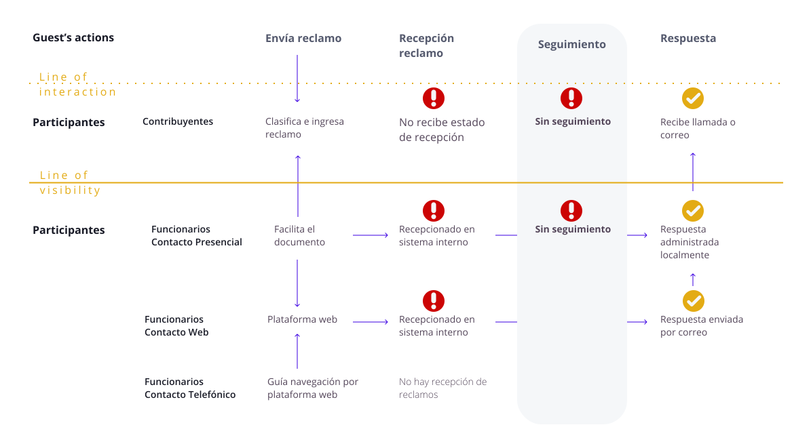
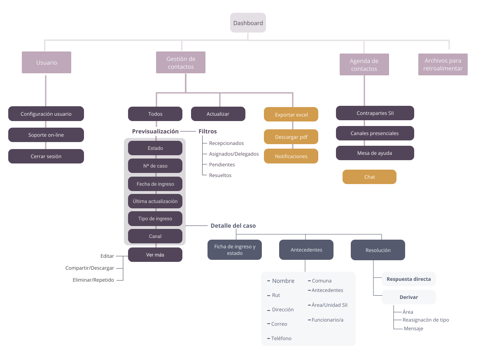
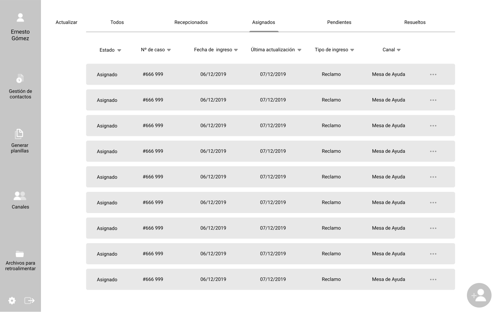
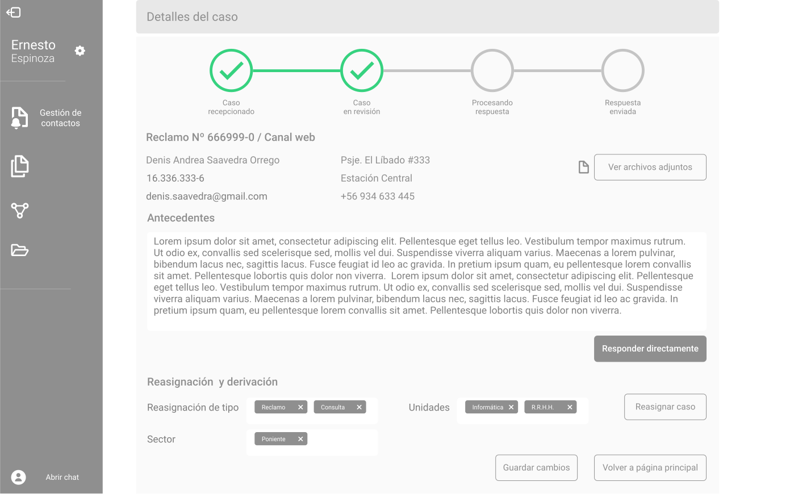
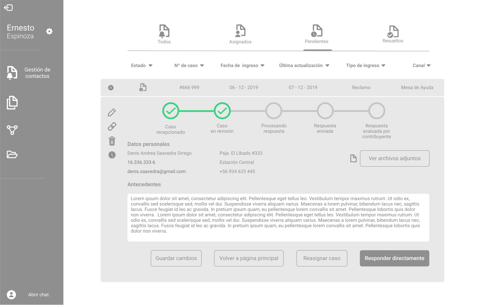

Mi rol
Design Thinking
UX Research

Information architecture
Prototyping>
El Servicio de Impuestos Internos es el organismo responsable de la administración tributaria de los impuestos en Chile. Dentro de sus múltiples funciones, está el de recibir las opiniones, reclamos y sugerencias de los contribuyentes, estas acciones son gestionadas desde tres áreas diferentes: contacto web, a través de la plataforma digital; la mesa de ayuda, que es la vía telefónica; y de forma presencial, en las diferentes sucursales.
Design Thinking
UX Research
Information architecture
Prototyping>
La metodología del Design Thinking, utilizada en este proyecto, pone a disposición herramientas de trabajo que enfocan los descubrimientos y posibles mejoras en la experiencia de los y las usuarias reales.
El primer paso en este proyecto fue realizar entrevistas y testeos con funcionarios y contribuyentes. El objetivo es entender tanto la forma en que usan las diferentes plataformas digitales, como también sus emociones al interactuar con ellas. Esto nos permite identificar flujos de trabajo y paint point que son guías de las propuestas de mejora.
Contribuyentes
Todas las personas naturales o jurídicas, que posean o administren bienes afectados por impuestos.

Funcionarias/os
Trabajadores/as del SII del área de Contacto Web, mesa de ayuda y de las oficinas de atención a público.
Para sintetizar los aprendizajes y visualizar de mejor forma el enfoque del trabajo, se construye un Service Blueprint. Esta herramienta incluye las diferentes acciones que implica el ingreso de las opiniones, los flujos de interacciones entre los diferentes actores; y el material físico y digital que permite estas interacciones. En esta versión sintetizada se destacan los puntos de dolor que se trabajaron como opotunidades de mejora


Identificados los lineamientos de nuestras propuestas, definimos para desarrollar 3 ideas principales:
La herramienta utilizada para trabajar aspectos de la arquitectura de la información de la plataforma se llama Card Sorting, permite crear categorías dentro del sitio a apartir de las respuestas de las y los usuarios, y en este caso tambien permitió identificar secciones en desuso y evaluar el uso de iconografía. A partir de estos testeos, se crea un nuevo flujo del Site map.
El desarrollo de prototipos es un proceso secuencial. Desde la base que nos deja el mapa del sitio, se van creando las pantallas desde su aspecto más general, hacia los detalles más específicos; hasta llegar a prototipos de baja fidelidad. En esta ocasión fueron diseñados en el programa Figma.


